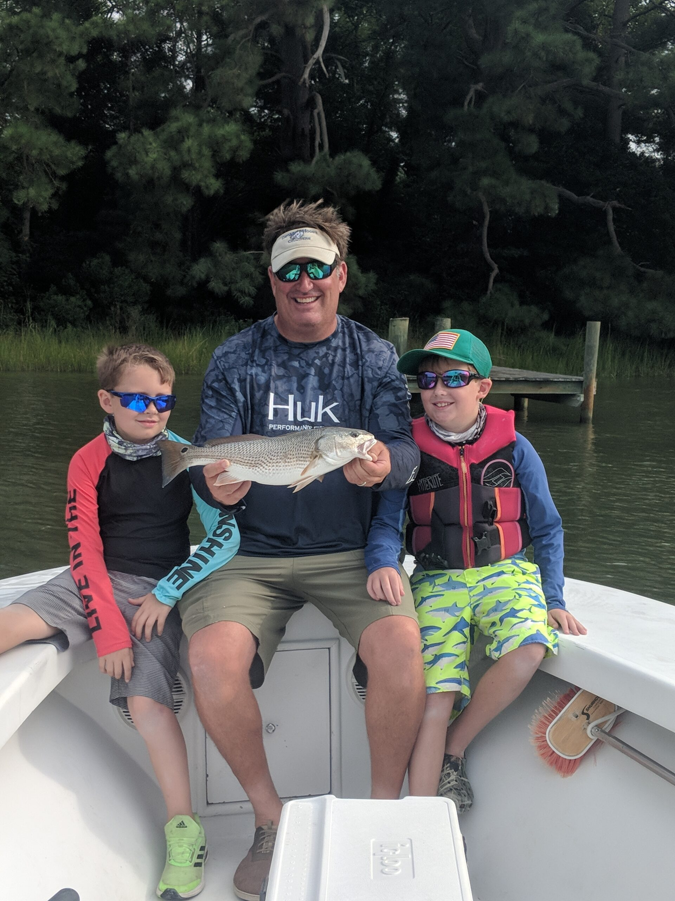
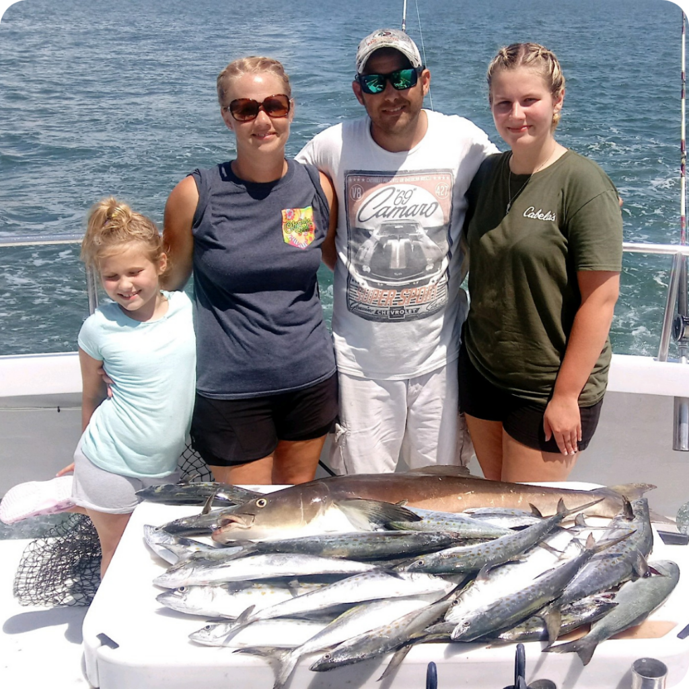
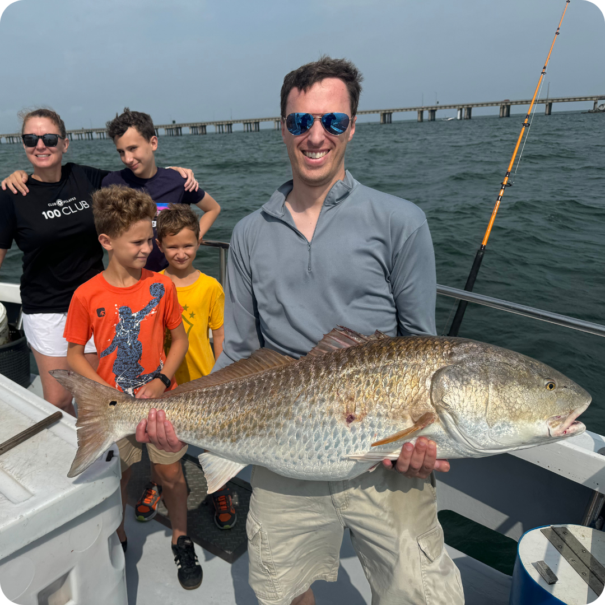
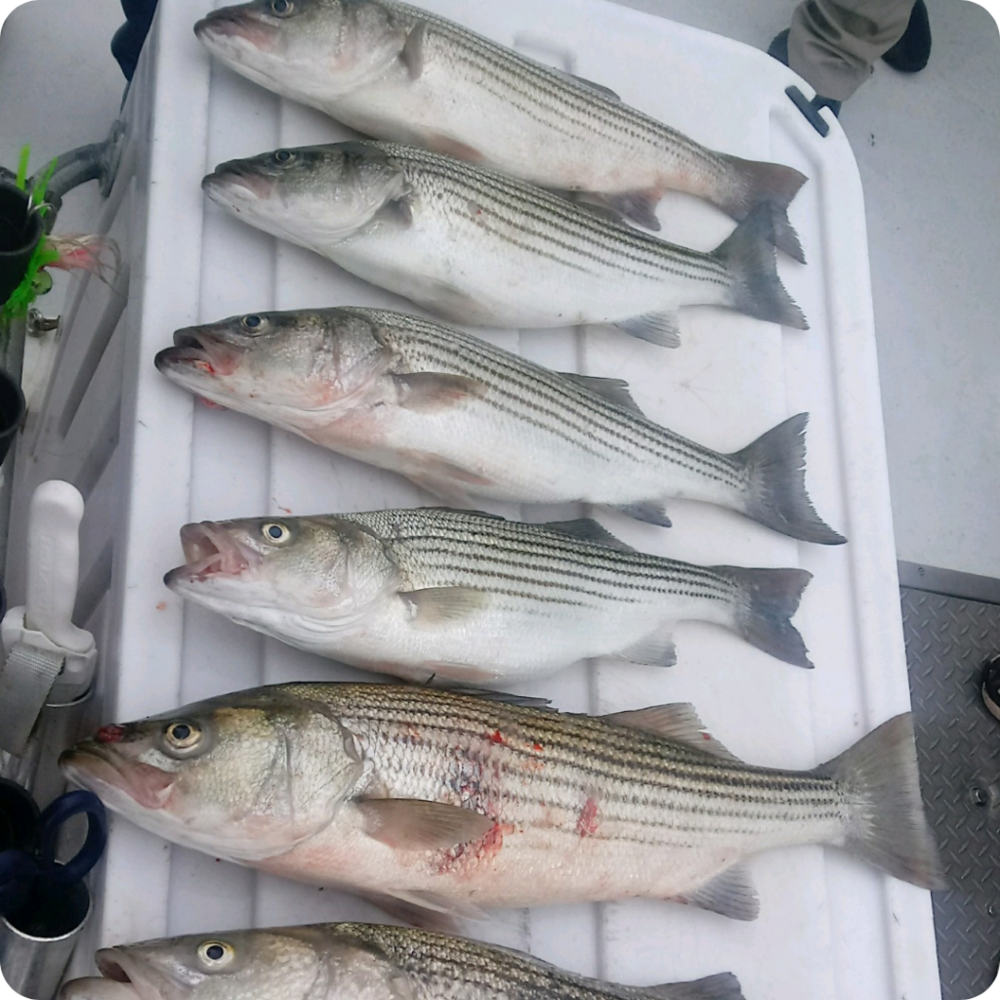
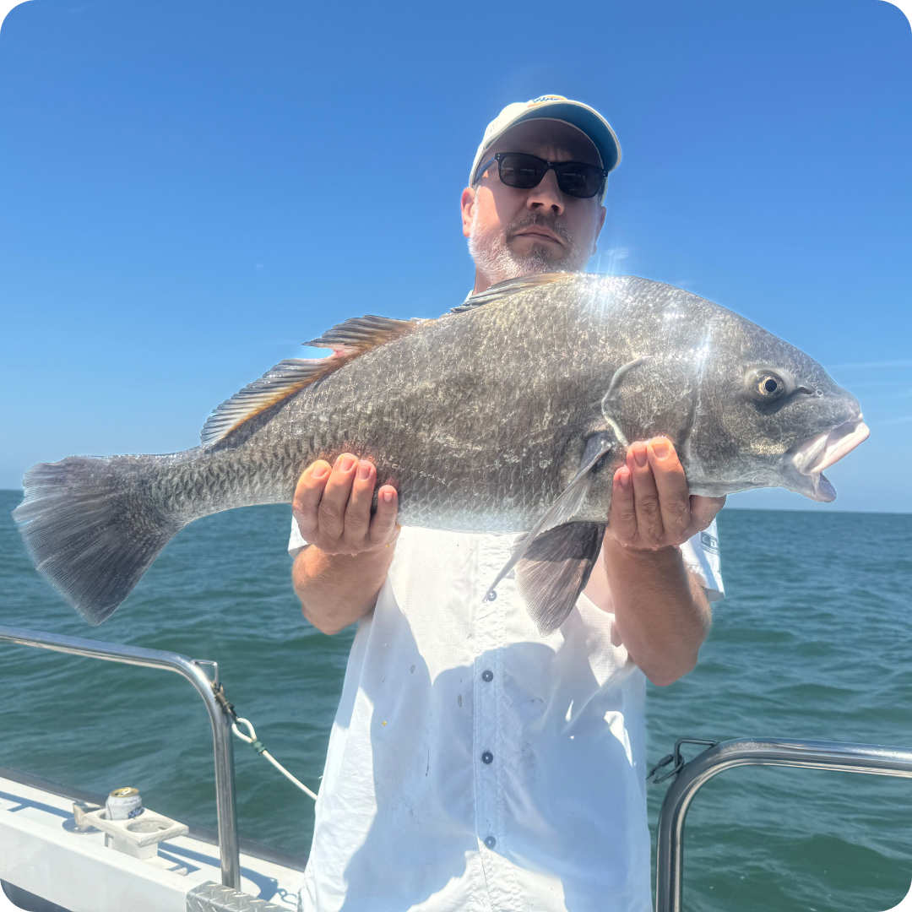
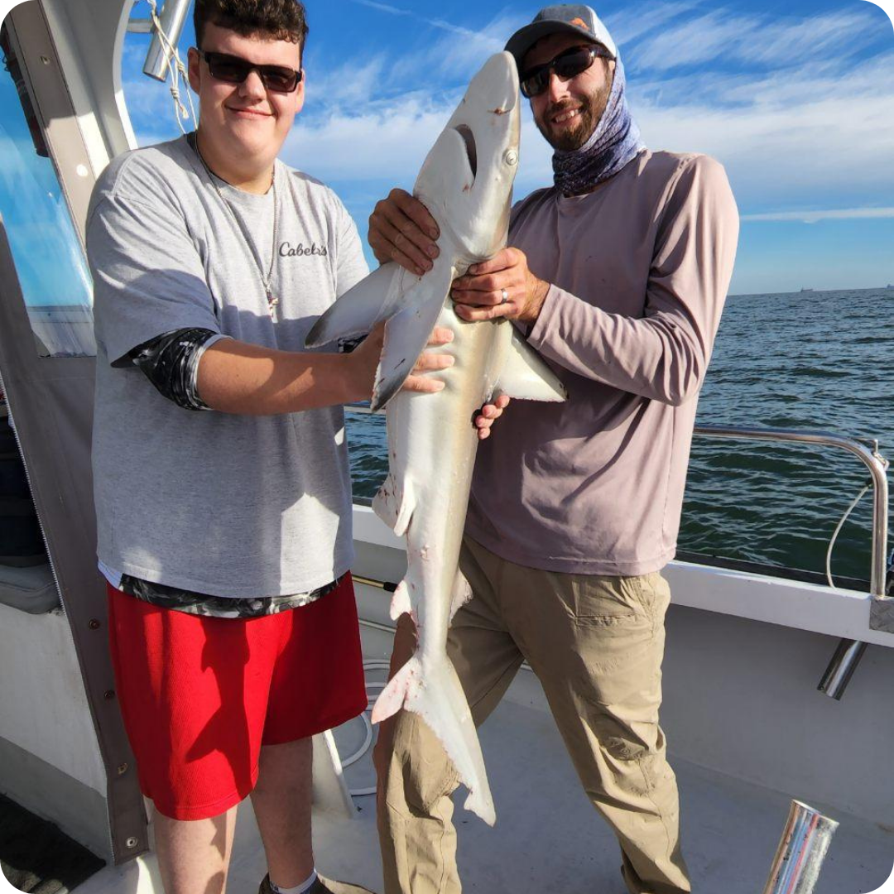
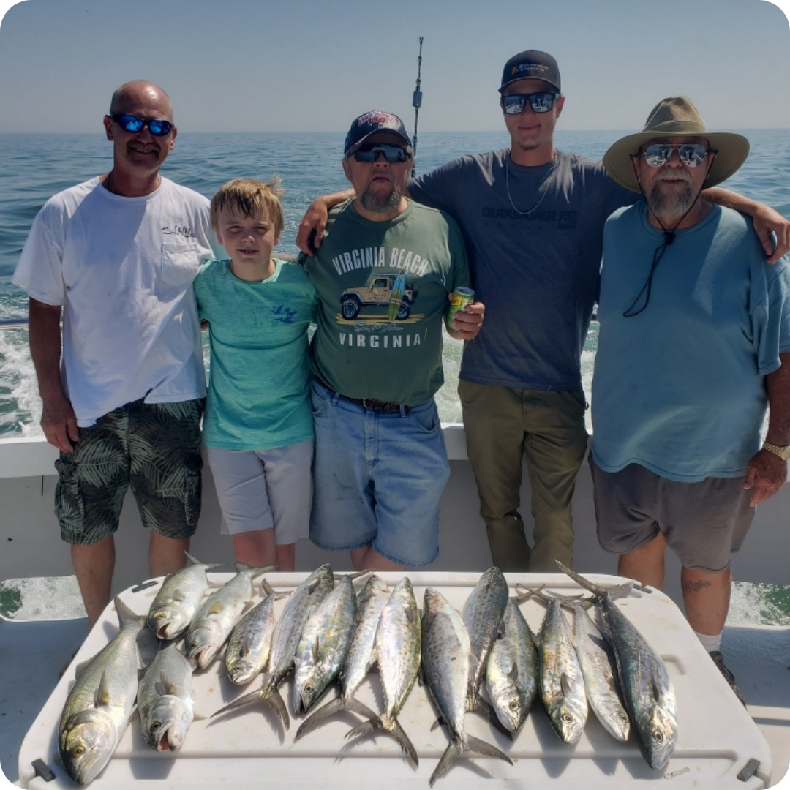
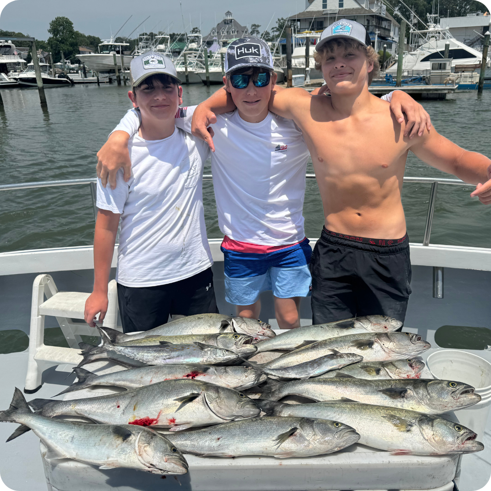
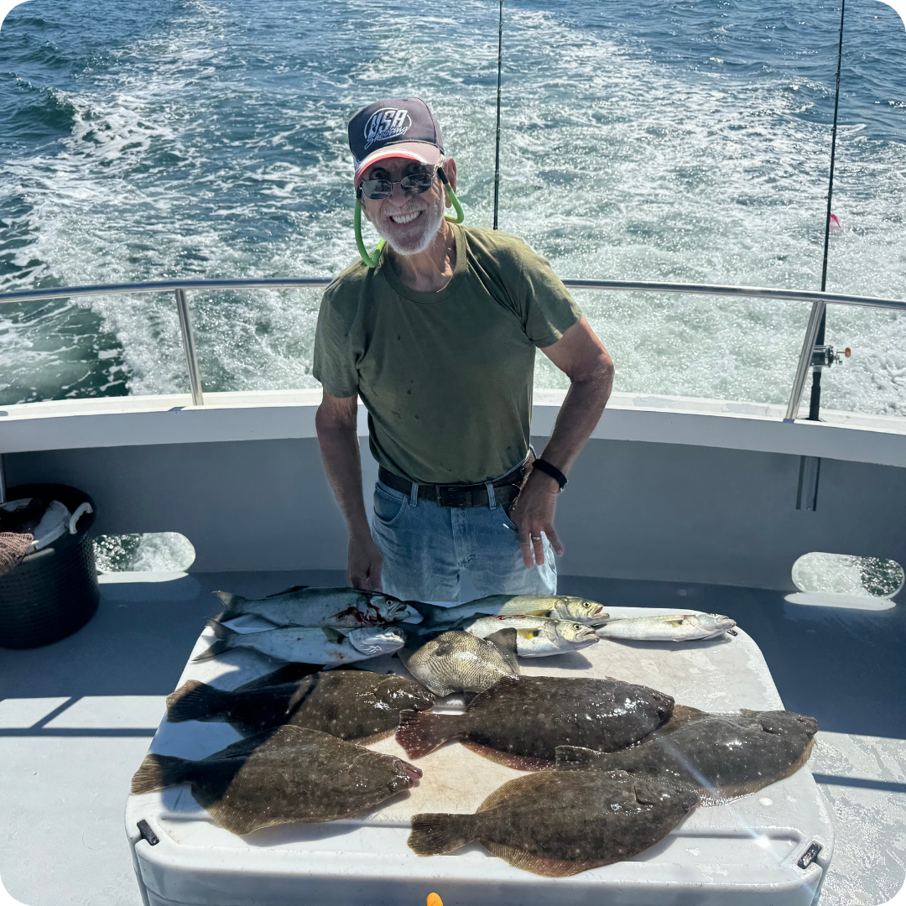
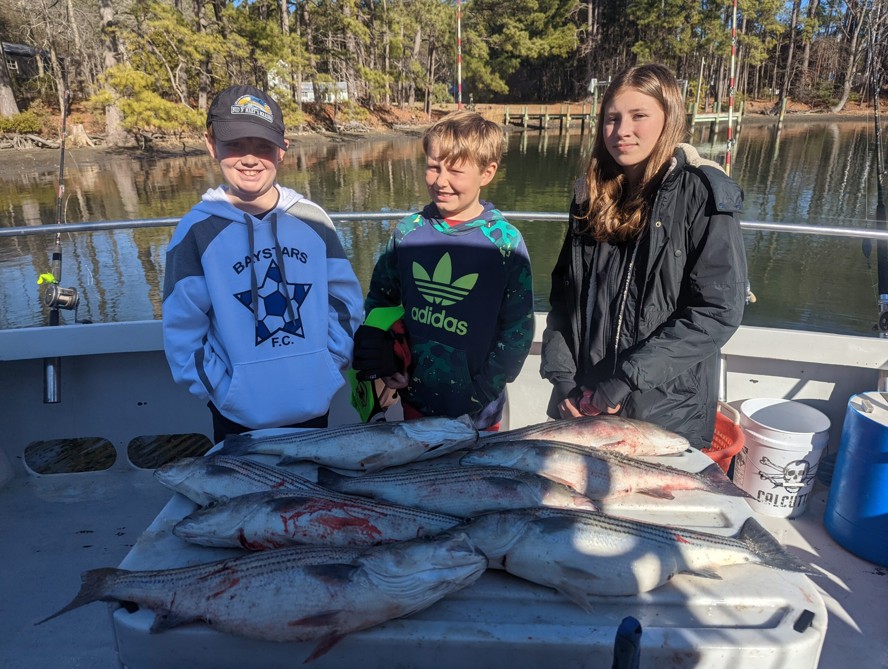

Join Captain Hogg aboard the Smokin' Gun II for an unforgettable Chesapeake Bay fishing adventure. Coast Guard certified & fully equipped.

With over 30 years as a licensed captain and more than four decades fishing the Chesapeake Bay, Captain Hogg is one of the most experienced charter fishing captains in the entire Hampton Roads region. His intimate knowledge of the Bay's channels, structure, currents, and seasonal fish migration patterns means he consistently puts clients on fish — whether you're a seasoned angler chasing trophy cobia or a family heading out on the water for the very first time.
Aboard the Smokin' Gun II, a 40-foot Coast Guard-certified charter vessel, you'll fish in comfort with climate-controlled indoor seating, shaded fishing areas, a private restroom, and the latest marine electronics. All fishing equipment, bait, tackle, and fish filleting service are included with every trip — Captain Hogg provides everything you need for a world-class Chesapeake Bay fishing experience. Just bring yourself and a Virginia saltwater fishing license.
Captain Hogg's Charter Service operates out of Downtown Hampton, Virginia, providing easy access to the lower Chesapeake Bay, the Hampton Roads Bridge-Tunnel fishing grounds, and the rich inshore waters that make this region one of the East Coast's premier saltwater fishing destinations. Whether you're visiting from Virginia Beach, Williamsburg, Newport News, Yorktown, or anywhere in the Hampton Roads metro area, you're just minutes from an unforgettable day on the water.
The Chesapeake Bay is the largest estuary in the United States and one of the most productive fisheries on the East Coast. Captain Hogg targets a wide variety of inshore saltwater species throughout the year, giving anglers the chance to battle everything from hard-fighting cobia and red drum to acrobatic Spanish mackerel and delicious flounder.

Cobia are the crown jewel of Chesapeake Bay fishing. These powerful fish average 30-60 lbs and are known for explosive strikes and brutal fights. Captain Hogg sight-casts to cruising cobia around the Bay Bridge-Tunnel, channel edges, and buoy lines. The Chesapeake Bay is one of the top cobia destinations on the entire East Coast, and Captain Hogg's 40+ years of experience means he knows exactly where to find them.

Red drum (redfish) are one of the most sought-after gamefish in the Chesapeake Bay. Juvenile "puppy drum" in the 18-27 inch slot range are excellent table fare, while oversized bull reds pushing 40+ inches put up an incredible fight. Captain Hogg targets red drum around grass flats, oyster bars, and channel edges throughout the Hampton Roads area.

Striped bass (rockfish) are the iconic Chesapeake Bay gamefish. The Bay serves as the primary spawning ground for the entire Atlantic migratory stock, and fall through spring offers world-class striper fishing. Captain Hogg trolls, live-baits, and jiggs for stripers around the Bridge-Tunnel, channel edges, and structure throughout the lower Bay. Trophy fish exceeding 40 inches are caught regularly.

Spadefish are the "angelfish of the Atlantic" and a summer favorite on the Chesapeake Bay. These distinctive black-and-white striped fish school around the Bridge-Tunnel pilings, wrecks, and artificial reefs in massive numbers. They fight hard on light tackle and are excellent on the grill. Captain Hogg anchors over structure and uses clam baits to fill the cooler.

Black drum are heavyweight bottom-feeders that migrate into the lower Chesapeake Bay each spring. These powerful fish can reach 80+ pounds and put up a grueling fight on heavy tackle. Captain Hogg targets big black drum around the Bridge-Tunnel and nearby shoals using fresh clam and crab baits. Spring is prime time for these Chesapeake Bay heavyweights.

Spanish mackerel are fast, acrobatic, and delicious — a triple threat that makes them one of the most popular Chesapeake Bay sportfish. These speedsters travel in large schools, slashing through baitfish near the surface. Captain Hogg trolls Clark spoons and Drone spoons to put anglers on fast-paced mackerel action throughout the summer months.

Bluefish are the most aggressive predators in the Chesapeake Bay. Known for their razor-sharp teeth and vicious strikes, blues provide non-stop action on light tackle. From small "snapper" blues to 10+ pound "gator" blues, these fish are a blast to catch and are found throughout the Bay from spring through fall. Great for beginners and kids.

Flounder (summer flounder/fluke) are prized for their mild, white, flaky meat — widely considered the best-eating fish in the Chesapeake Bay. Captain Hogg drifts or slow-trolls over sandy bottoms, channel edges, and structure where flounder lie in ambush. The Hampton Roads area is one of Virginia's top flounder fishing destinations, with the chance for "doormat" fish over 24 inches.
The Chesapeake Bay stretches over 200 miles from the Susquehanna River in Maryland to the Atlantic Ocean at Virginia Beach, making it the largest estuary in North America. This vast body of water serves as a critical nursery and feeding ground for hundreds of fish species, creating one of the most diverse and productive fisheries on the entire East Coast.
Hampton, Virginia sits at the mouth of the Chesapeake Bay where the James River, Hampton Roads harbor, and the open Bay converge. This confluence of habitats — from deep shipping channels and bridge pilings to shallow grass flats and oyster bars — creates an incredibly rich fishing environment that attracts both resident and migratory gamefish species year-round.
Captain Hogg's decades of experience fishing these waters means he understands the seasonal patterns, tidal movements, water temperature transitions, and baitfish migrations that determine where fish will be on any given day. Whether you're targeting trophy cobia in summer, bull red drum in fall, or monster striped bass in winter, Captain Hogg puts you in the right spot at the right time.
The lower Chesapeake Bay around Hampton is also home to the famous Chesapeake Bay Bridge-Tunnel, a 17.6-mile engineering marvel that serves as one of the premier fishing structures on the East Coast. The bridge pilings, artificial islands, and adjacent rock piles create habitat that attracts virtually every gamefish species in the Bay, and Captain Hogg fishes this legendary structure regularly.
The Chesapeake Bay offers incredible fishing opportunities year-round. Here's what to expect each season.
Spring brings warmer water temperatures and the return of migratory species. Striped bass fishing remains strong through April. Large black drum arrive in April-May for some of the year's most exciting big-game fishing. Red drum, flounder, and bluefish begin showing up as water temps climb past 60°F.
Summer is peak season on the Chesapeake Bay with the greatest variety of species available. Cobia fishing is at its best from June through August. Spadefish stack up around structure, Spanish mackerel run in schools, and red drum patrol the flats. This is the most popular time for family fishing charters.
Fall fishing on the Chesapeake Bay is outstanding. Cooling water temperatures trigger massive baitfish migrations that attract red drum, striped bass, bluefish, and Spanish mackerel. Many experienced anglers consider fall the best overall season for Chesapeake Bay fishing due to the combination of species diversity and fish activity levels.
Winter on the Chesapeake Bay is trophy striped bass season. Large migratory rockfish move through the lower Bay following schools of menhaden, offering the chance at fish exceeding 40+ inches. While the weather is colder, dedicated anglers who brave the elements are often rewarded with the biggest catches of the year.
Year-Round Fishing Opportunities: Unlike many coastal destinations that have a limited fishing season, the Chesapeake Bay offers productive fishing 12 months a year. Captain Hogg adjusts his techniques, locations, and target species based on water temperature, baitfish movements, and seasonal migrations to ensure every charter is a productive outing. Whether you're visiting Hampton in the heat of July or the chill of January, there are always fish to catch.
Booking Tip: Peak season (May through October) books up fastest, especially weekends and holidays. If you're planning a summer cobia trip or fall striper run, we recommend booking 2-4 weeks in advance to secure your preferred date. Call (757) 876-1590 to check availability.
| Species | Jan | Feb | Mar | Apr | May | Jun | Jul | Aug | Sep | Oct | Nov | Dec |
|---|---|---|---|---|---|---|---|---|---|---|---|---|
| Striped Bass | ✓ | ✓ | ✓ | ★ | ★ | — | — | — | — | ★ | ★ | ✓ |
| Cobia | — | — | — | — | ✓ | ★ | ★ | ★ | ✓ | — | — | — |
| Red Drum | — | — | — | ✓ | ✓ | ✓ | ✓ | ★ | ★ | ★ | ✓ | — |
| Flounder | — | — | — | ✓ | ✓ | ★ | ★ | ★ | ✓ | ✓ | ✓ | — |
| Spanish Mackerel | — | — | — | — | — | ✓ | ★ | ★ | ★ | ✓ | — | — |
| Bluefish | — | — | — | — | ✓ | ✓ | ★ | ★ | ✓ | ✓ | ✓ | — |
| Spadefish | — | — | — | — | — | ★ | ★ | ★ | ✓ | — | — | — |
| Black Drum | — | — | — | ★ | ★ | ✓ | — | — | — | — | — | — |
| Sheepshead | — | — | — | ✓ | ✓ | ★ | ★ | ★ | ✓ | ✓ | — | — |
| Tautog | ✓ | ✓ | ✓ | ★ | ✓ | — | — | — | — | ✓ | ★ | ✓ |
| Croaker | — | — | — | — | ✓ | ✓ | ★ | ★ | ✓ | ✓ | — | — |
| Speckled Trout | — | — | — | ✓ | ★ | ✓ | — | — | ✓ | ★ | ✓ | — |
| Sharks | — | — | — | — | ✓ | ★ | ★ | ★ | ✓ | — | — | — |
A 40-foot Coast Guard-certified charter fishing vessel built for comfort, safety, and serious fishing.

The Smokin' Gun II isn't just any charter boat — it's a purpose-built 40-foot fishing machine designed specifically for the demands of Chesapeake Bay charter fishing. Coast Guard certified and fully insured, this vessel provides the perfect combination of fishing capability, passenger comfort, and safety equipment that serious anglers and families alike expect from a top-tier charter operation.
Captain Hogg has outfitted the Smokin' Gun II with the latest marine electronics including GPS, fish finder, radar, and VHF radio. The boat features both open-air and covered fishing areas, comfortable indoor cabin seating for when you need a break from the elements, and a private restroom — making it ideal for full-day and marathon fishing trips.
All trips include equipment, bait, fish filleting & Coast Guard-certified vessel. Just bring your Virginia saltwater fishing license.
Note: A non-refundable deposit is required to reserve your date. Virginia saltwater fishing license required.
See what our guests are reeling in on the Chesapeake Bay.
Secure your date on the Chesapeake Bay. We'll confirm within 24 hours.
Every trip aboard the Smokin' Gun II is a full-service experience. Captain Hogg handles everything so you can focus on what matters — catching fish and making memories.
Fill out the form below and Captain Hogg will confirm your trip.
Don't just take our word for it. Here's what our guests have to say.
"Clean boat, captain is friendly and the mate worked his butt off. We caught fish all day on the Bay. Best charter experience in Hampton Roads!"
"Captain Hogg knows these waters like the back of his hand. 40+ years of experience shows. My family had an absolute blast — even my kids who had never fished before were reeling them in!"
"Professional crew, well-maintained boat, and we absolutely crushed the cobia. Captain Hogg put us right on top of the fish. Already booking our next trip."
Captain Hogg provides all fishing equipment, bait, tackle, and fish filleting service. Here's what you should bring for the best experience.
Captain Hogg's Charter Service is conveniently located in Downtown Hampton, VA — easily accessible from across the Hampton Roads region.
Captain Hogg's Charter Service departs from 101 South King Street in the heart of Downtown Hampton. Located on the waterfront, the dock is just steps from the Virginia Air & Space Science Center, Fort Monroe, and Buckroe Beach. Hampton is a historic city with deep maritime roots and some of the best access to Chesapeake Bay fishing on the Virginia coast.
Newport News residents enjoy the closest drive to Captain Hogg's dock. Just 20 minutes via I-64 or Mercury Boulevard, it's the perfect weekend morning trip. Newport News is home to the world's largest shipyard, and the adjacent waters of the James River and Hampton Roads create prime fishing habitat where bay species congregate.
Virginia Beach visitors and locals looking for Chesapeake Bay charter fishing choose Captain Hogg's for the experienced captain, spacious boat, and access to the Bay's best fishing grounds. The drive via I-64 and the Hampton Roads Bridge-Tunnel takes about an hour — well worth it for the quality of fishing Captain Hogg delivers on the Chesapeake Bay.
Williamsburg visitors combining history with outdoor adventure find Captain Hogg's charter the perfect complement to their Colonial Williamsburg trip. Families visiting Busch Gardens, Water Country USA, or the historic district can add a half-day or full-day fishing charter to their vacation — it's one of the most popular activities for Williamsburg tourists.
Yorktown is just 30 minutes from Captain Hogg's dock, making it easy for Yorktown residents and tourists to enjoy a charter fishing trip on the Chesapeake Bay. The drive along the scenic Colonial Parkway or via I-64 is quick and convenient. Combine your battlefield tour with an unforgettable day on the water.
Norfolk residents and Navy personnel stationed at Naval Station Norfolk are just 30 minutes from Captain Hogg's charter. Whether you're looking for a weekend fishing trip, a birthday outing, or team building on the water, Captain Hogg offers an accessible and affordable charter experience right across the Hampton Roads harbor.
Richmond anglers make the 90-minute drive to Hampton for some of the best saltwater fishing in Virginia. The Chesapeake Bay offers a completely different fishing experience from Central Virginia's freshwater rivers and lakes. Many Richmond residents book full-day or marathon charters to maximize their time on the water.
Anglers from the Northern Outer Banks and northeastern North Carolina travel to Hampton for Chesapeake Bay charter fishing that offers species diversity hard to find elsewhere. The Bay's unique ecosystem means you can target species like spadefish and cobia that aren't as accessible from the OBX surf and nearshore waters.
Hampton Roads is one of the largest metro areas in Virginia, encompassing the cities of Hampton, Newport News, Norfolk, Virginia Beach, Chesapeake, Suffolk, Portsmouth, Williamsburg, and surrounding communities. With a combined population of nearly 2 million people, the region sits at the confluence of the James River, Elizabeth River, and Chesapeake Bay — creating one of the richest marine environments on the Atlantic seaboard.
Captain Hogg's Charter Service is ideally positioned in Downtown Hampton to access the full range of Chesapeake Bay fishing opportunities. From the dock at 101 South King Street, it's a short run to the lower Bay's legendary fishing grounds including the Hampton Roads Bridge-Tunnel, the Monitor-Merrimac Bridge-Tunnel area, Thimble Shoal Channel, the Hampton Bar, and miles of productive shoreline structure.
Hampton Roads welcomes millions of visitors each year who come for the beaches, military bases, historic sites, and theme parks. A charter fishing trip with Captain Hogg is the perfect way to experience the Chesapeake Bay's natural beauty while creating memories that last a lifetime. Whether you're on a family vacation to Virginia Beach, a history trip to Colonial Williamsburg and Yorktown, or visiting loved ones stationed at one of the area's military installations, a day of fishing on the Bay should be on your itinerary.
Captain Hogg welcomes visitors from across the country and around the world. His patient teaching style and family-friendly approach make every charter accessible to anglers of all experience levels, from first-time fishermen to seasoned saltwater veterans.
Everything you need to know about fishing with Captain Hogg on the Chesapeake Bay.
All anglers need a valid Virginia saltwater fishing license to fish on the Chesapeake Bay. Purchase yours online before your trip — it only takes a few minutes.
Have questions? Reach out anytime.